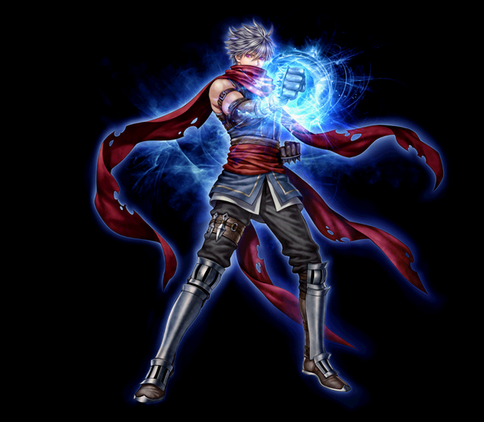
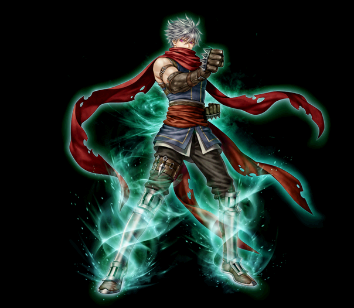
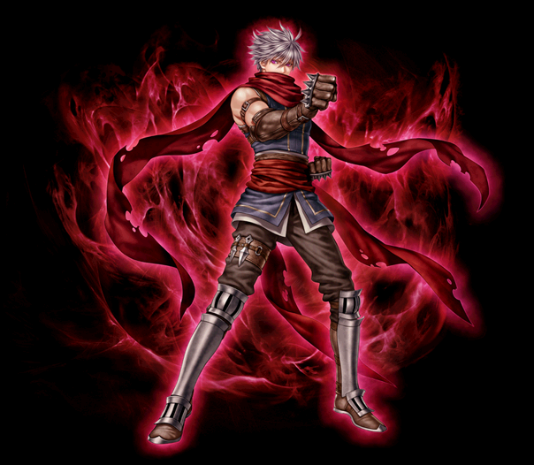
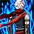

2020/2/19～ 武道家 スキル一覧
2020/02/19 状態異常に伴うスキル改変後のデータ。
[通常スキル]
ダイヤモンドアームズ
ライトニングストライカー
オーラマスター
ダイヤモンドアームズ
| ダイヤモンドアームズ | |||||||
|---|---|---|---|---|---|---|---|
|  | |||||||
| [専用パッシブ] 闘魂 | |||||||
| スキル説明 |
武道家の闘士が熱く燃え上がる。クリティカルおよびダブルクリティカル時、追加ダメージを与える。 |
||||||
| スキル効果 |
- 致命打時のダメージ50%分、追加1回攻撃 (クリティカル、ダブルクリティカルダメージ発動時にクリティカルダメージの50%に相当するダメージを追加で1回与える) |
||||||
| [専用覚醒スキル] 一撃必殺 | ||||||||
|---|---|---|---|---|---|---|---|---|
| スキル難易度 | 4 | |||||||
| 必要スキル | 急所攻撃[50] |
|||||||
| スキル説明 | 敵の急所を攻撃し、一定の確率で敵の体力を現在の1/3に減らす決定打を与える。麻痺している敵を攻撃すると決定打が発動する場合がある。直後、左足スキルのレベルがしばらく上昇。 | |||||||
| レベル | 0 | 1 | 2 | 3 | 4 | 5 | ... | 50 |
| 消費CP | 110 | 111.5 | 113 | 114.5 | 116 | 117.5 | ... | 185 |
| 獲得CP | 0 | 0 | 0 | 0 | 0 | 0 | ... | 0 |
| 物理ダメージ | 205% | 208.5% | 212% | 215.5% | 219% | 222.5% | ... | 385% |
| 攻撃速度 | 20% | 20.4% | 20.8% | 21.2% | 21.6% | 22% | ... | 40% |
| 命中率 | 5% | 5.1% | 5.2% | 5.3% | 5.4% | 5.5% | ... | 10% |
| 致命打率 | 95% | 96% | 97% | 98% | 99% | 100% | ... | 145% |
| 決定打率(Max 50％) | 50% | 50% | 50% | 50% | 50% | 50% | ... | 50% |
| スキルレベル上昇 | 8 | 8.1 | 8.2 | 8.3 | 8.4 | 8.5 | ... | 13 |
| 備考 | 左足スキルのスキルレベル上昇(5秒) | |||||||
| 備考 |
猛連撃や破貫顎を当てた後に撃つことでクリティカル時のダメージを+600%にする。 ※確定致命打ではなく、敵の致命打抵抗の影響を受けます。 |
|||||||
| 備考 | 右手スキル | |||||||
| 猛連撃 | ||||||||
|---|---|---|---|---|---|---|---|---|
| スキル難易度 | 3 | |||||||
| 必要スキル | 連打[50] |
|||||||
| スキル説明 | 左手を利用して激しい連打で攻撃。敵が長い時間麻痺し、連続攻撃が可能。直後、右手、下蹴り種類スキルのレベルがしばらく上昇。 | |||||||
| レベル | 0 | 1 | 2 | 3 | 4 | 5 | ... | 50 |
| 消費CP | 60 | 61 | 62 | 63 | 64 | 65 | ... | 110 |
| 獲得CP | 100 | 102 | 104 | 106 | 108 | 110 | ... | 200 |
| 物理ダメージ | 120% | 122% | 124% | 126% | 128% | 130% | ... | 220% |
| 攻撃速度 | 45% | 45.6% | 46.2% | 46.8% | 47.4% | 48% | ... | 75% |
| 命中率 | 10% | 10.2% | 10.4% | 10.6% | 10.8% | 11% | ... | 20% |
| 麻痺確率 | 削除 | |||||||
| 攻撃回数 | 7連撃 | |||||||
| 敵麻痺時間(秒) | 削除 | |||||||
| スキルレベル上昇 | 7 | 7.1 | 7.2 | 7.3 | 7.4 | 7.5 | ... | 12 |
| 備考 | 右手/下蹴りスキル上昇(5秒) 命中時、10秒間の間弱点弱体化効果付与 |
|||||||
| 備考 | 左手スキル | |||||||
 |
破貫顎 | |||||||
|---|---|---|---|---|---|---|---|---|
| スキル難易度 | 3 | |||||||
| 必要スキル | 貫顎[50] |
|||||||
| スキル説明 | 右腕の肘で敵の顎を攻撃し、クリティカルヒットボーナスが発生する。また致命打攻撃時に敵の攻撃力を減少させる。直後、左手、右足スキルのレベルと致命打確率がしばらく上昇。 | |||||||
| レベル | 0 | 1 | 2 | 3 | 4 | 5 | ... | 50 |
| 消費CP | 35 | 35.5 | 36 | 36.5 | 37 | 37.5 | ... | 60 |
| 獲得CP | 50 | 51 | 52 | 53 | 54 | 55 | ... | 100 |
| 物理ダメージ | 195% | 198.5% | 202% | 205.5% | 209% | 212.5% | ... | 270% |
| 致命打率 | 75% | 76% | 77% | 78% | 79% | 80% | ... | 125% |
| ブロック率低下 | 30% | |||||||
| 敵回避率減少 | 25.0% | |||||||
| 回避減少発動確率 | 70% | 71% | 72% | 73% | 74% | 75% | ... | 120% |
| 発動確率 | 100% | |||||||
| 持続時間 | 10秒 | |||||||
| スキルレベル上昇 | 7 | 7.1 | 7.2 | 7.3 | 7.4 | 7.5 | ... | 12 |
| 備考 | 左手/右手スキル上昇(5秒間) | |||||||
| 備考 | 右手スキル | |||||||
ライトニングストライカー
| ライトニングストライカー | |||||||
|---|---|---|---|---|---|---|---|
|  | |||||||
| [専用パッシブ] 宙返り | |||||||
| スキル説明 |
宙返りのように素早く蹴る。蹴り攻撃を与えるたびに火属性攻撃力強化および累積する。 |
||||||
| スキル効果 |
ターゲットの火属性抵抗力15%減少(10秒持続、最大5回累積) |
||||||
 |
[専用覚醒スキル] 爆裂回転脚 | |||||||
|---|---|---|---|---|---|---|---|---|
| スキル難易度 | 3 | |||||||
| 必要スキル | 三連回し蹴り[50] |
|||||||
| スキル説明 | 三回連続で回し蹴りを放ち、攻撃ごとに範囲爆発攻撃を与える。右手スキルのレベルと回避率がしばらく上昇。 | |||||||
| レベル | 0 | 1 | 2 | 3 | 4 | 5 | ... | 50 |
| 消費CP | 150 | 152.5 | 155 | 157.5 | 160 | 162.5 | ... | 300 |
| 獲得CP | 50 | 51 | 52 | 53 | 54 | 55 | ... | 100 |
| 物理ダメージ | 230% | 235% | 240% | 245% | 250% | 255% | ... | 480% |
| 回避率 | 10% | 10.2% | 10.4% | 10.6% | 10.8% | 11% | ... | 20% |
| 致命打率 | 25% | |||||||
| 攻撃速度 | 50% | |||||||
| 攻撃回数 | 9回 | |||||||
| 火属性攻撃 | 160～210 | 165~215 | 170~220 | 175~225 | 180~230 | 185~235 | ... | 410~460 |
| 爆発半径(ピクセル) | 100 | 101 | 102 | 103 | 104 | 105 | ... | 150 |
| スキルレベル上昇 | 9 | 9.1 | 9.2 | 9.3 | 9.4 | 9.5 | ... | 14 |
| 備考 | 右手スキルのスキルレベル上昇(5秒) | |||||||
| 備考 | 右足スキル | |||||||
| キャスティング速度 | ？flame (以前より短縮) | |||||||
| 音速かかと落とし | ||||||||
|---|---|---|---|---|---|---|---|---|
| スキル難易度 | 2 | |||||||
| 必要スキル | かかと落とし [50] |
|||||||
| スキル説明 | 左前蹴り後、そのまま振り下ろして攻撃ごとに範囲爆発攻撃を与える。直後、右足スキルのレベルと命中率がしばらく上昇。 | |||||||
| レベル | 0 | 1 | 2 | 3 | 4 | 5 | ... | 50 |
| 消費CP | 85 | 86.5 | 88 | 89.5 | 91 | 92.5 | ... | 160 |
| 獲得CP | 50 | 51 | 52 | 53 | 54 | 55 | ... | 100 |
| 物理ダメージ | 100% | 103% | 106% | 109% | 112% | 115% | ... | 250% |
| 命中率 | 7.5% | 7.65% | 7.8% | 7.95% | 8.1% | 8.25% | ... | 8.25% |
| 攻撃回数 | 3回 | |||||||
| 火属性攻撃 | 284～324 | 288～328 | 292~332 | 296~336 | 300~340 | 304~344 | ... | 484～524 |
| 爆発半径(ピクセル) | 100 | 101 | 102 | 103 | 104 | 105 | ... | 150 |
| スキルレベル上昇 | 6 | 6.1 | 6.2 | 6.3 | 6.4 | 6.5 | ... | 11 |
| 備考 | 右足スキルのスキルレベル上昇(5秒) | |||||||
| 備考 | 左足スキル | |||||||
| 備考 | 通常時、1mほど周囲の敵を引き寄せる。 ※PvP時引き寄せ効果なし |
|||||||
 |
鉤蹴り | |||||||
|---|---|---|---|---|---|---|---|---|
| スキル難易度 | 2 | |||||||
| 必要スキル | 後回し蹴り [50] |
|||||||
| スキル説明 | 右後ろ回し蹴り攻撃で広い半円範囲の敵を攻撃。範囲ダメージを与える。左手スキルのレベルと回避率がしばらく上昇。 | |||||||
| レベル | 0 | 1 | 2 | 3 | 4 | 5 | ... | 50 |
| 消費CP | 65 | 66 | 67 | 68 | 69 | 70 | ... | 115 |
| 獲得CP | 100 | 102 | 104 | 106 | 108 | 110 | ... | 200 |
| 物理ダメージ | 150% | 153% | 156% | 159% | 162% | 165% | ... | 300% |
| 回避率 | 5% | 5.1% | 5.2% | 5.3% | 5.4% | 5.5% | ... | 10% |
| 致命打率 | 15% | |||||||
| スキルレベル上昇 | 8 | 8.1 | 8.2 | 8.3 | 8.4 | 8.5 | ... | 13 |
| プレイヤー回避率増加 | 2.5% | 2.55% | 2.6% | 2.65% | 2.7% | 2.75% | ... | 5% |
| 備考 | 左手スキルのスキルレベル上昇(5秒) | |||||||
| 備考 | 右足スキル | |||||||
オーラマスター
| オーラマスター | |||||||
|---|---|---|---|---|---|---|---|
|  | |||||||
| [専用パッシブ] 全身全霊 | |||||||
|  | スキル説明 |
戦いの最中、武道家が全力を出して魔法回避率を上昇させる。 |
|||||
| スキル効果 | 魔法回避15% | ||||||
 |
[専用覚醒スキル] 烈風激波 | |||||||
|---|---|---|---|---|---|---|---|---|
| スキル難易度 | 5 | |||||||
| 必要スキル | 烈風撃[50] |
|||||||
| スキル説明 | 気功弾を飛ばして敵を攻撃する。範囲ダメージを与え、敵を麻痺させる。 | |||||||
| レベル | 0 | 1 | 2 | 3 | 4 | 5 | ... | 50 |
| 消費CP | 150 | 152 | 154 | 156 | 158 | 160 | ... | 250 |
| 獲得CP | 0 | 0 | 0 | 0 | 0 | 0 | ... | 0 |
| 物理ダメージ | 850% | 860% | 870% | 880% | 890% | 900% | ... | 1350% |
| 命中率 | 20% | 20.4% | 20.8% | 21.2% | 21.6% | 22% | ... | 40% |
| 攻撃回数 | 10回(1回当たり2発、5回範囲攻撃) | |||||||
| 風属性攻撃 | 93～153 | 96~156 | 99~159 | 102~162 | 105~165 | 108~168 | ... | 243~303 |
| クールタイム | 2秒 | |||||||
| ノックバック確率 | 10% | |||||||
| ノックバック距離(m) | 1.3 | |||||||
| 射程距離(m) | 6 | 6.05 | 6.1 | 6.15 | 6.2 | 6.25 | ... | 8.5 |
| 備考 | 対象を 10秒間、感電状態にする(発動確率：100％) 感電状態の敵は10秒間、攻撃を受けるたびに追加でダメージの10％の感電ダメージを受ける。 | |||||||
| 無双拳 | ||||||||
|---|---|---|---|---|---|---|---|---|
| スキル難易度 | 2 | |||||||
| 必要スキル | 破砕拳[50]
|
|||||||
| スキル説明 | 拳に気を込めて4回飛ばし、攻撃する。無双拳が命中した敵は、風属性の追加ダメージを受ける。 | |||||||
| レベル | 0 | 1 | 2 | 3 | 4 | 5 | ... | 50 |
| 消費CP | 55 | 56 | 57 | 58 | 59 | 60 | ... | 105 |
| 獲得ＣＰ | 35 | 35.7 | 36.4 | 37.1 | 37.8 | 38.5 | ... | 70 |
| 命中率 | 170% | 173% | 176% | 179% | 182% | 185% | ... | 320% |
| 風属性攻撃 | 93～153 | 96~156 | 99~159 | 102~162 | 105~165 | 108~168 | ... | 243~303 |
| 攻撃回数 | 4回 | |||||||
| 豪気 | ||||||||
|---|---|---|---|---|---|---|---|---|
| スキル難易度 | 1 | |||||||
| 必要スキル | 気合[50]
|
|||||||
| スキル説明 | 気合いを入れて攻撃力と防御力が増加する。全属性の攻撃力も含まれる。 | |||||||
| レベル | 0 | 1 | 2 | 3 | 4 | 5 | ... | 50 |
| 消費CP | 25 | 25.5 | 26 | 26.5 | 27 | 27.5 | ... | 50 |
| 獲得CP | 164 | 166 | 168 | 170 | 172 | 174 | ... | 264 |
| 攻撃力上昇 | 49% | 52% | 55% | 58% | 61% | 64% | 199% | |
| 防御力上昇 | 24% | 25.5% | 27% | 28.5% | 30% | 31.5% | 99% | |
| 集中力増加 | 20% | |||||||
| 持続時間 | 30秒 | |||||||
| キャスティング速度(秒) | 1.25秒 | |||||||
| ノックバック抵抗 | 100% | |||||||
| 全属性攻撃力増加 | 20% | |||||||
| クールタイム | 60秒 | |||||||
| 備考 | 攻撃力増加Max300%、防御力増加Max100% | |||||||